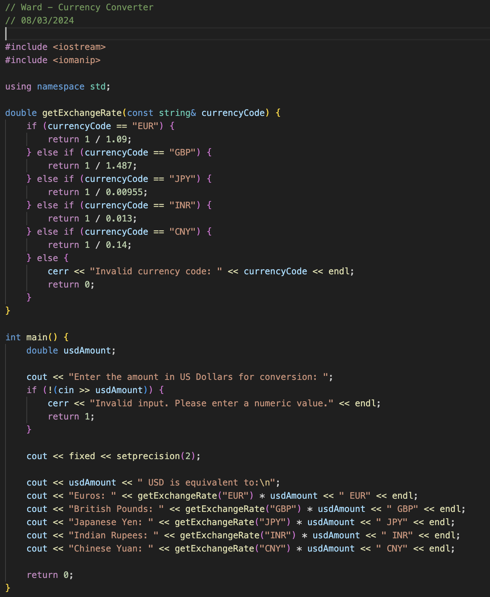
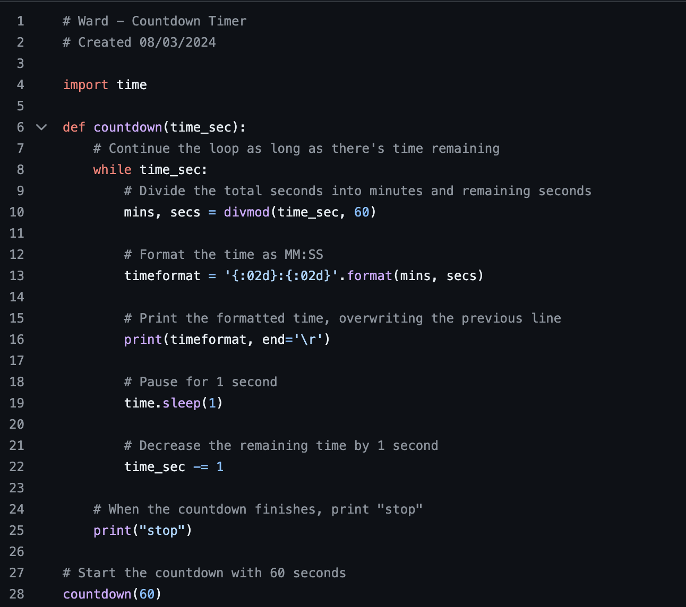

About Me
As a senior at Kent State University at Stark, pursuing a Bachelor of Arts in Computer Science, I have embraced the opportunity to combine academic rigor with impactful, real-world experiences. As a recipient of the prestigious Choose Ohio First Computer Science Scholarship, I have dedicated myself to developing both technical expertise and leadership skills, laying the foundation for a meaningful career in technology.
Outside the classroom, I have found great fulfillment in community service and global outreach. Over the past year and a half, I have volunteered to assist two Ukrainian adults with enhancing their English language proficiency. This experience has deepened my cultural awareness and reaffirmed my commitment to building connections and empowering others. Additionally, my involvement with various non-profit organizations has allowed me to contribute my skills to meaningful initiatives, further refining my adaptability, problem-solving capabilities, and collaborative approach.
Technically, I bring a robust foundation in programming languages, including C++, Python, and JavaScript, alongside practical experience in frameworks such as Flutter for cross-platform mobile application development. This versatile skill set enables me to approach challenges with creativity and precision, consistently striving to deliver innovative and efficient solutions.
I am passionate about harnessing the power of technology to address real-world challenges and drive positive change. I look forward to collaborating with professionals and organizations that share this vision, contributing my technical acumen, collaborative mindset, and dedication to excellence.
Projects
Analyzing the Impact of AI Tools on Student Study Habits and Academic Performance
This study explores the effectiveness of AI tools in enhancing student learning, specifically in improving study habits, time management, and feedback mechanisms. The re- search focuses on how AI tools can support personalized learn- ing, adaptive test adjustments, and provide real-time classroom analysis. Student feedback revealed strong support for these features, and the study found a significant reduction in study hours alongside an increase in GPA, suggesting positive academic outcomes. Despite these benefits, challenges such as over-reliance on AI and difficulties in integrating AI with traditional teaching methods were also identified, emphasizing the need for AI tools to complement conventional educational strategies rather than replace them. Data were collected through a survey with a Likert scale and follow-up interviews, providing both quantitative and qualitative insights. The analysis involved descriptive statistics to summarize demographic data, AI usage patterns, and perceived effectiveness, as well as inferential statistics (T-tests, ANOVA) to examine the impact of demographic factors on AI adoption. Regression analysis identified predictors of AI adoption, and qualitative responses were thematically analyzed to understand students' perspectives on the future of AI in education. This mixed-methods approach provided a comprehensive view of AI's role in education and highlighted the importance of privacy, transparency, and continuous refinement of AI features to max- imize their educational benefits
View Project Download PDFExploring AI Text Generation, Retrieval-Augmented Generation, and Detection Technologies: a Comprehensive Overview
The rapid development of Artificial Intelligence (AI) has led to the creation of powerful text generation models, such as large language models (LLMs), which are widely used for di- verse applications. However, concerns surrounding AI-generated content, including issues of originality, bias, misinformation, and accountability, have become increasingly prominent. This paper offers a comprehensive overview of AI text generators (AITGs), focusing on their evolution, capabilities, and ethical implications. This paper also introduces Retrieval-Augmented Generation (RAG), a recent approach that improves the contextual relevance and accuracy of text generation by integrating dynamic infor- mation retrieval. RAG addresses key limitations of traditional models, including their reliance on static knowledge and potential inaccuracies in handling real-world data. Additionally, the paper reviews detection tools that help differentiate AI-generated text from human-written content and discusses the ethical challenges these technologies pose. The paper explores future directions for improving detection accuracy, supporting ethical AI development, and increasing accessibility. The paper contributes to a more responsible and reliable use of AI in content creation through these discussions.
View Project Download PDFNeural Network Interpretability With Layer-Wise Relevance Propagation: Novel Techniques for Neuron Selection and Visualization
Interpreting complex neural networks is crucial for understanding their decision-making processes, particularly in applications where transparency and accountability are essential. This proposed method addresses this need by focusing on Layer- wise Relevance Propagation (LRP), a technique used in explain- able artificial intelligence (XAI) to attribute neural network outputs to input features through backpropagated relevance scores. Existing LRP methods often struggle with precision in evaluating individual neuron contributions. To overcome this limitation, we present a novel approach that improves the parsing of selected neurons during LRP backward propagation, using the Visual Geometry Group 16 (VGG16) architecture as a case study. Our method creates neural network graphs to highlight critical paths and visualizes these paths with heatmaps, optimizing neuron selection through accuracy metrics like Mean Squared Error (MSE) and Symmetric Mean Absolute Percentage Error (SMAPE). Additionally, we utilize a deconvolutional visualization technique to reconstruct feature maps, offering a comprehensive view of the network's inner workings. Extensive experiments demonstrate that our approach enhances interpretability and supports the development of more transparent artificial in- telligence (AI) systems for computer vision applications. This advancement has the potential to improve the trustworthiness of AI models in real-world machine vision applications, thereby increasing their reliability and effectiveness
View Project Download PDFSmart Communities and IoT Research Presentation 2024
Investigating Stress-Induced Driving Behaviors: A Psychophysiological Analysis using Wearable Sensors
View Project Download PDFCurrency Converter C++ Project 08/03/2024
This currency converter is a C++ program that converts US dollars into euros, British pounds, Japanese yen, Indian rupees, and Chinese yuan. It prompts the user for a US dollar amount, calculates the equivalent values using hardcoded exchange rates, and displays the results.

Countdown Timer Python Project 08/03/2024
This Python code creates a countdown timer. It defines a function named countdown that takes the total countdown time in seconds as input. The function repeatedly calculates the remaining minutes and seconds, displays them in a clear format, and pauses for one second before decrementing the timer. This process continues until the time reaches zero, at which point it prints "stop". The code concludes by initiating a 60-second countdown.

Resume
Contact
Email: benjamincward9@gmail.com
Phone: (330) 440-3605
Student Resources
Career Essentials Presentation
An overview of essential career development topics and strategies.
View Presentation Download PDFInternship Experience Presentation
Insights and learnings from my internship experience at Nationwide Mutual Insurance Company.
View Presentation Download PDF
Feel free to connect with me!